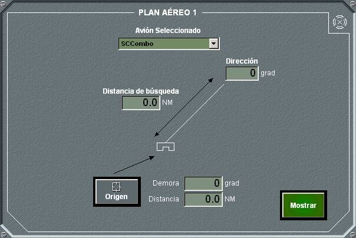

Planes Aéreos

El panel general de planes aéreos y de helicópteros permite seleccionar entre cinco tipos diferentes de planes aéreos y seis de helicópteros.
Pulsando en cada botón se abre el panel de detalle correspondiente al tipo de plan aéreo seleccionado.
Plan Aéreo 1

En el panel de detalle de plan aéreo 1 se pueden realizar las siguientes acciones:
- Seleccionar un avión de la lista de unidades amigas para asignarle el plan, aunque también es posible crear este plan sin seleccionar unidad.
- Para un plan determinado, introducir los datos correspondientes, según procedimiento, teniendo en cuenta lo siguiente:
- El origen del plan, se toma de la posición del Hook al pulsar el botón Origen, o se introduce manualmente, como una demora, distancia respecto a la unidad propia.
- Trazar el plan en la pantalla táctica, pulsando el botón Mostrar. En la pantalla táctica aparecerá un dibujo para el plan aéreo 1, de acuerdo a los datos introducidos en el plan.
Plan Aéreo 2
En el panel de detalle de plan aéreo 2 se pueden realizar las siguientes acciones:
- Seleccionar un avión de la lista de unidades amigas para asignarle el plan, aunque también es posible crear este plan sin seleccionar unidad.
- Para un plan determinado, introducir los datos correspondientes, según procedimiento, teniendo en cuenta lo siguiente:
- El datum del plan, se toma de la posición del Hook al pulsar el botón Datum, o se introduce manualmente, como una demora, distancia respecto a la unidad propia.
- Trazar el plan en la pantalla táctica, pulsando el botón Mostrar. En la pantalla táctica aparecerá un dibujo para el plan aéreo 2, de acuerdo a los datos introducidos en el plan.
Plan Aéreo 3
En el panel de detalle de plan aéreo 3 se pueden realizar las siguientes acciones:
- Seleccionar un avión de la lista de unidades amigas para asignarle el plan, aunque también es posible crear este plan sin seleccionar unidad.
- Para un plan determinado, introducir los datos correspondientes, según procedimiento, teniendo en cuenta lo siguiente:
- El origen del plan, se toma de la posición del Hook al pulsar el botón Origen, o se introduce manualmente, como una demora, distancia respecto a la unidad propia.
- El modo relativo o geográfico (absoluto) se selecciona mediante la barra de desplazamiento correspondiente.
- Trazar el plan en la pantalla táctica, pulsando el botón Mostrar. En la pantalla táctica aparecerá un dibujo para el plan aéreo 3, de acuerdo a los datos introducidos en el plan.
Plan Aéreo 4
En el panel de detalle de plan aéreo 4 se pueden realizar las siguientes acciones:
- Seleccionar un avión de la lista de unidades amigas para asignarle el plan, aunque también es posible crear este plan sin seleccionar unidad.
- Para un plan determinado, introducir los datos correspondientes, según procedimiento, teniendo en cuenta lo siguiente:
- El Origen del plan, se toma de la posición del Hook al pulsar el botón Origen, o se introduce manualmente, como una demora, distancia respecto a la unidad propia.
- El tipo del plan, Circular o Cuadrado se selecciona mediante la barra de desplazamiento correspondiente. Los sectores de inicio y final sólo se pueden introducir si se ha elegido tipo Circular.
- El modo relativo o geográfico (absoluto) se selecciona mediante la barra de desplazamiento correspondiente.
- Trazar el plan en la pantalla táctica, pulsando el botón Mostrar. En la pantalla táctica aparecerá un dibujo para el plan aéreo 4, de acuerdo a los datos introducidos en el plan.
Plan Aéreo 5
En el panel de detalle de plan aéreo 5 se pueden realizar las siguientes acciones:
- Seleccionar un avión de la lista de unidades amigas para asignarle el plan, aunque también es posible crear este plan sin seleccionar unidad.
- Para un plan determinado, introducir los datos correspondientes, según procedimiento, teniendo en cuenta lo siguiente:
- El Origen del plan, se toma de la posición del Hook al pulsar el botón Origen, o se introduce manualmente, como una demora, distancia respecto a la unidad propia.
- El tipo del plan, Circular o Poligonal se selecciona mediante la barra de desplazamiento correspondiente.
- El modo relativo o geográfico (absoluto) se selecciona mediante la barra de desplazamiento correspondiente.
- Trazar el plan en la pantalla táctica, pulsando el botón Mostrar. En la pantalla táctica aparecerá un dibujo para el plan aéreo 5, de acuerdo a los datos introducidos en el plan.